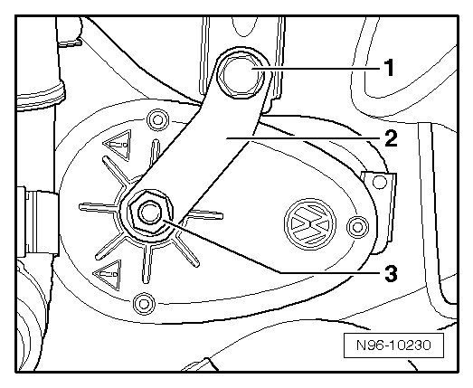
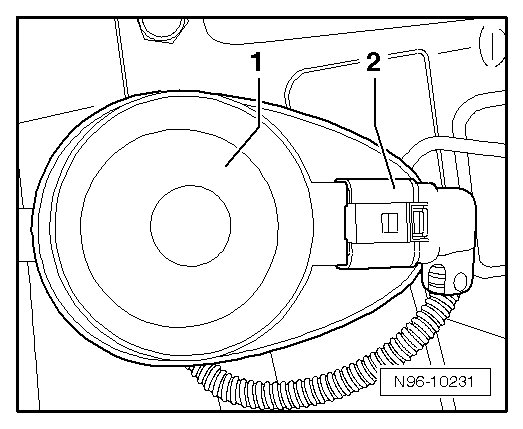

Alarm Horn: Service and Repair
Alarm Horn
Special tools, testers and auxiliary items required
• Torque Wrench (V.A.G 1331/)
• To remove the Alarm Horn (H12) (Back-up horn), anti-theft warning system must be deactivated --> [ Anti-Theft Alarm System, Activating and Deactivating ] Anti-Theft Alarm System, Activating and Deactivating.
• Alarm Horn (H12) (Back-up horn) is located at left in plenum chamber, beneath E-Box.
Removing
- Switch off ignition, switch off all electrical consumers and remove ignition key.
- Remove E-Box in plenum chamber at left --> [ Left Plenum Chamber E-Box ] Left Plenum Chamber E-Box.
- Remove bolt - 1 -.

- Disengage connector - 2 - and disconnect it from Alarm Horn (H12) - 1 -.

Installing
Install in reverse order of removal, noting the following:
• If self-locking mounting nut - 3 - has been loosened in order to remove bracket - 2 -, it must be replaced.
- Tighten all bolts and nuts to the specifications --> [ Alarm Horn ] [1][2]Alarm Horn.